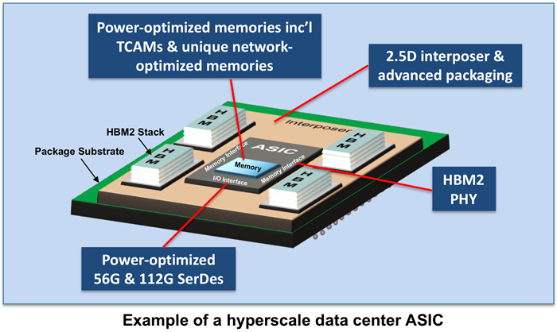

New Architectures Deliver Unprecedented Performance, Density and Configurability
eSilicon offers a set of high-performance and high-bandwidth IP and 2.5D solutions on 7nm technology that target networking and data center applications by offering 56G/112G SerDes, fast caches with more than a 35% increase in performance and TCAMs offering more than a 50% increase in performance from previous FinFET generations, along with the 2.5D integration of up to 1228Gbytes/sec data rate high-bandwidth memory (HBM2).

7nm High-Bandwidth Networking & High-Performance Computing IP Platform
The 7nm IP platform is eSilicon’s second-generation platform, with architectural enhancements from our silicon-proven platform in previous FinFET technologies. It was designed specifically to meet the high-speed and high-bandwidth requirements of ASICs and ASSPs targeted for networking and data center applications.
eSilicon’s 7nm IP platform delivers a complete ecosystem of networking-optimized IP with high configurability designed in. All IP in the platform is “plug and play,” using the same metal stack, reliability requirements, operating ranges, control interfaces and DFT methodology. This configurability and compatibility results in better performance, higher density and faster time to market.
The platform includes the following IP:
56G/112G long-reach SerDes
High-speed single-port ternary CAM (SP TCAM) compiler
High-speed single-port fast cache (FC) compiler
High-speed single-port (SP) SRAM compiler
High-speed dual-port (DP) SRAM compiler
High-speed 2-port asynchronous register file (2PARF) compiler
High-speed pseudo 2-port (P2P) SRAM compiler
Ultra-high-density (UHD) pseudo 2-port (P2P) SRAM compiler
High-speed pseudo 4-port (P4P) SRAM compiler
High-speed pseudo quad-port (PQP) SRAM compiler
1024 bit HBM2 PHY
1.8V oxide 1.8V LVDS I/O library
1.8V oxide 1.8V/2.5V/3.3V general-purpose I/O library
Highlights of the New Architectures
Optimized for Performance
Except for the UHD P2P SRAM, all memory compilers in the 7nm IP platform are optimized for performance, offering a greater than 35% increase in performance from previous FinFET generations
High-speed fast cache compiler offers extreme speeds suitable for compute-intensive applications
High-speed P2P SRAM compiler is expected to run at increased performance while providing high density for two-port functionality
Optimized for Bandwidth, Density & Power
The high-speed pseudo four-port and pseudo quad-port SRAM are new architectures introduced in 7nm to support parallel operations to increase system bandwidth. The PQP allows up to four simultaneous read or write operations. The P4P and PQP provide high bandwidth with the best density and power savings for critical applications requiring multi-port architectures.
For applications requiring lower clock speeds, the ultra-high-density pseudo two-port SRAM compiler provides extreme area savings and reduction in dynamic and leakage power by up to 40 and 70 percent, respectively.